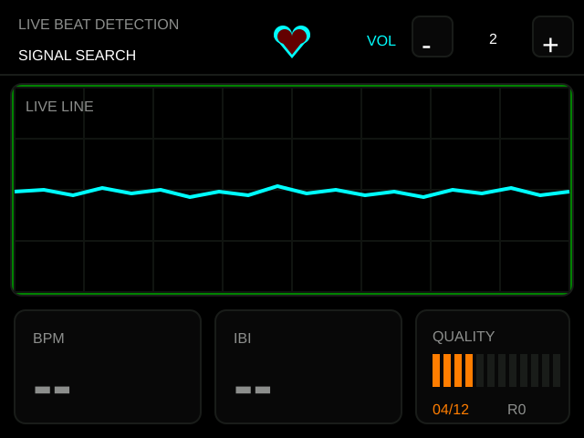
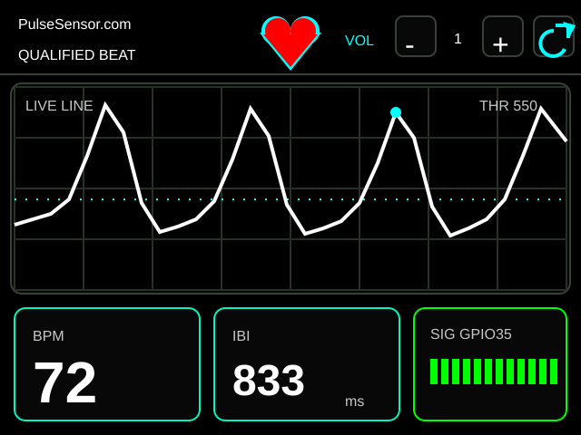

CYD Pulse Dashboard
One-screen firmware layout for the ESP32 Cheap Yellow Display PulseSensor build.


- Header contains live beat status, animated heart, and touch volume controls.
- Graph shows the live PulseSensor waveform without repainting the full dashboard every frame.
- Bottom panels show BPM, IBI, quality, and detector re-arm count.